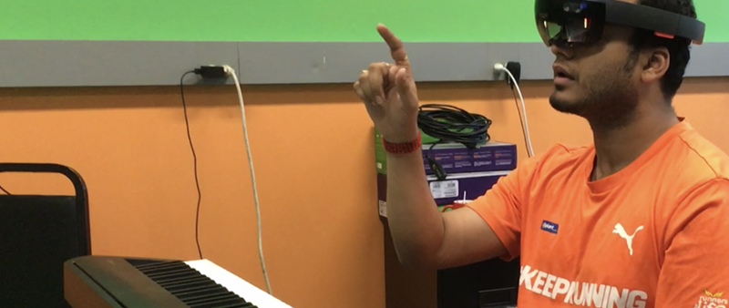

Music Everywhere
Microsoft HoloLens AR Piano Learning System

Music Everywhere started as a graduate school project during my time at Carnegie Mellon University. Our team consisted of two programmers, one musician and one designer—me. Our goal: build an Augmented Reality (AR) piano learning tool.
After graduating, our success with this academic project soon inspired us to spin off into a startup to continue using AR for music learning. In April 2017, we formed our company Music Everywhere, Inc., and by December of 2017 we had entered, submitted and won first place in the Microsoft and Unity sponsored AR HoloLens competition. Along with the grand prize of $100K,
we expanded and published our app to the Microsoft Store.
To read more about my experience with the Microsoft HoloLens Competition, please visit my design blog.
I led the design and 3D art of Music Everywhere on the Microsoft HoloLens since the project’s inception in Sept 2016. In Nov 2017, I led the team’s global launch of the product on the Microsoft App store.

I partnered with our investor’s marketing team to discover insights that helped us translate design concepts that delivered features that fit the market.
I created proof of concept videos and prototypes that communicated our product vision. I helped the team align design goals with company goals, driving our company strategy through design principles.
I partnered with our investor’s marketing team to discover insights that helped us translate design concepts that delivered features that fit the market.
I created proof of concept videos and prototypes that communicated our product vision. I helped the team align design goals with company goals, driving our company strategy through design principles.
I worked with the company CEO to define development scope for our product launch, navigating a challenging schedule with prioritizing features for the product.
I developed the experience from sketches on paper through design handoff, including executing user journeys, wireframes, prototypes and usability tests.
I compiled and designed our product pitch deck, and presented our company to investors for seed-stage investment and client sales pitches.
Most piano learning apps are designed for mobile phones and tablets. A major issue for users during play comes when users must mentally translate the instructions from the screen to the physical instrument. This seemed ripe for improvement using AR.
With AR technology, we align the 3D interface (the piano instructions) directly on the physical piano keys. This makes discerning our AR
instructions with the actual instrument easier and more intuitive.
To read more about the AR Interface Design, please see this NIME2017 paper we published.

In order to create a great musical experience, we conducted customer and market research to explore key insights to build the final deliverable.
Often missing from traditional curriculums, musical improvisation can enhance performance skills, develop one's ear and improve understanding of theory and context.
The Virtual Hand would be a good tool to demonstrate hand positioning and performance techniques in the AR space.
3D virtual musicians provide an optimal environment to learn about and practice improvisation concepts, scales and techniques.
We want to reach users who feel left behind from learning music due to limitations in conventional music education. Our AR solution presents a flexible approach and innovative technology that opens the door for new students to discover real musical experiences that can enrich their lives.
During the CMU, ETC semester, we already built a workable prototype,
and demo’ed at the GDC (Game Developer Conference) in San Fransisco,
NIME (New Interfaces for Musical Expression) in Copenhagen.
What are our new goals?

In order to ensure a smooth setup, we needed account for: How to lead the user’s vision within the limited field of view(FOV) to see the whole virtual graphic without being cut off.
In order to determine which note users played on the keyboard, we used a Bluetooth connection to send out a MIDI signal from the digital piano to the HoloLens. This made ensuring a good connection critical to the experience.
In the first version, we had no setting flow for users. Only developers know how to acess the Bluetooth connection
Due to the native HoloLens environment, users must pair Bluetooth devices through the device’s system settings. To help guide users, I created an animation to teach them how to complete this process, and included a tutorial for the Bluetooth connection process troubleshooting as well, in case the original setup was not done correctly.
Our first version was intended for the full 88 keyed piano (full size), but there are many products in the market that feature different sizes. How do we design an experience that works for the majority of these products?
Our first version was designed only for the 88 keyed piano. (full size)
We cover 88, 61 , 49 and 25 keys of size of pianos, which accounts for almost every kind. The system can detect the piano size after users press the first and the last key, and adapts the AR interface to the keys.

Calibration to ensure proper alignment gives the foundation for the entire experience. Without it, the instructions are useless. In our academic project, our team was always on hand to help assist users in tech setup and user calibration - we often relied on instinct, which (let’s face it) is a truly mysterious endeavor.
For a shipped product, we knew we needed to create an intuitive process for users to do this themselves, successfully and reliably.
In the first version, we often relied on instinct to setup keyboard alignment.
A customized image tracking marker is within hand’s reach for the user to spawn the AR interface. By looking at the tracking marker, users can spawn the interface. Then place it on the middle C to adjust the alignment by easily moving the markers around.
Finding Middle C
Aligning the Marker on Middle C
Our goal is to guide and inspire people on how they can express themselves with playing piano, through improvisation. In our lessons, the virtual musicians teach improv knowledge. Users can follow along with instructions in Following Mode, or experiment with different notes in Improv Mode. It’s not about learning to play perfectly, it’s more about learning the value of jumping right into playing music.
Our first version enabled user to pick lessons according to genre, which posed some problems when we tried to expand the lesson content later. The problem we faced in this structure was the difficulty in making it modular and scalable. We knew we needed to redesign it.
Old version: Pick a lesson accoring to genre
We designed the lesson packages which included several lessons within them. This allowed us to design a system that accounted for every music level, to define each lesson package’s level, and to upload more materials for the future.

New version: Pick a lesson package accoring to music level
New version: Pick a lesson inside the package
AR experiences often tend to be unstable due to technical limitations today. For example, the AR interface might drift away from the current alignment or the Bluetooth connection might disappear. Relaunching the app was annoying, but during the period we developed this at school, it was a simple fix for many bugs. When we were building our next version to publish, we knew it was critical to craft troubleshooting functions for users within the app.
To reach the goal, I designed the torubleshoot process. When problems happen, users can pause the experience in place to resolve the issue.

People love animated characters. They’re fun, liven up a scene, and provide a fun way to instill the context of music playing with a band. To achieve this in a meaningful way, I built up more animations to sync with music beats and created more interaction scenarios.
Old virtual bands
I optimized all the 3D topology which allowed me to create more complicated animations. With these changes, the animated virtual musician step towards the user to teach them how to play, and react to the music rhythm beat by beat. This captures the user’s attention in a playful way.

New virtual band: More interaction

New virtual band: Better visual quality
The tester is testing the HoloLens and piano connection
“What if our design totally fails, or for people who don’t have the Bluetooth compatible digital piano?”
Considering the worst cases, I design the “No-Piano Demo”option for people who can’t get the settings to work, or without a proper piano. Through this demo, people can get a preliminary understanding for how Music Everywhere works.
From this pessimistic perspective, we developed a full FAQ section. Here, users could troubleshoot by themselves with guided instructions, and get to know more details about Music Everywhere.
Developing for the HoloLens, we’ve encountered many surprises. Between navigating the foundation UX of AR, integrating with other hardware,
working around a limited FOV, experience stability is not guaranteed. Thinking pessimistically drove us to discover some fundamental problems
we ignored earlier in our process, led us to optimize more playing conditions.
FAQ: Supported Piano, No-Piano Demo
Below are the Visual assets I created that represented our app’s design and experience.

Working on the Microsoft HoloLens platform allowed us to be an early publisher of AR music learning content. We got early recognition from industry leaders, but knew that our future would depend on Mobile AR. The HoloLens, though an established platform, is too expensive to ever achieve widespread adoption ($3K USD).
Looking ahead, we knew we would make our next experience using ARKit for iOS, bringing our user base pool from early adopter AR enthusiasts to the population at large. Hello, iPhone.


{kind=link}